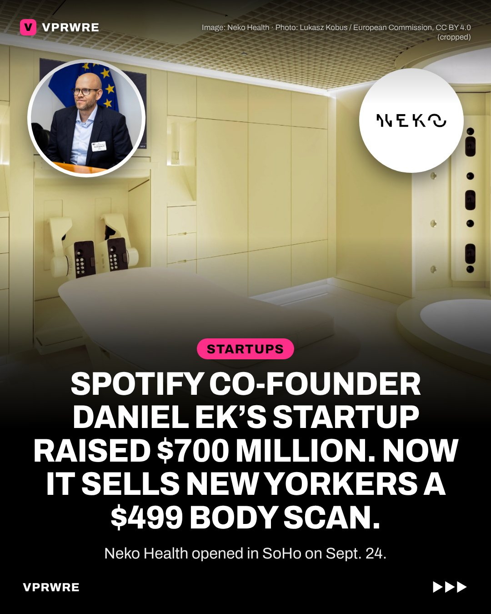

Startups
Spotify co-founder Daniel Ek’s startup raised $700 million. Now it sells New Yorkers a $499 body scan.
A Spotify co-founder’s startup now sells New Yorkers a $499 body scan.

It’s Neko Health, co-founded by Daniel Ek. Its first U.S. clinic opened in SoHo on Sept. 24. A one-hour visit images your skin, checks your heart and circulation, measures body composition and runs a blood test. Neko raised $700 million in July.
The catch: some doctors warn that screening people who feel fine can lead to overdiagnosis. In Neko’s own 2025 Swedish data, 1 in 5 members scanned were referred for more checks, and Neko says that data has no control group.
Still, Neko says it has scanned more than 100,000 people, and 75% of members book and prepay their next scan.
Our take: Neko is selling peace of mind as a subscription. Whether it makes people healthier hasn’t been proven yet.
Is knowing more about your body always better?
The carousel
11 slides · Open on Instagram
Disclosure: VPRWRE drafts with Claude, Anthropic’s AI.